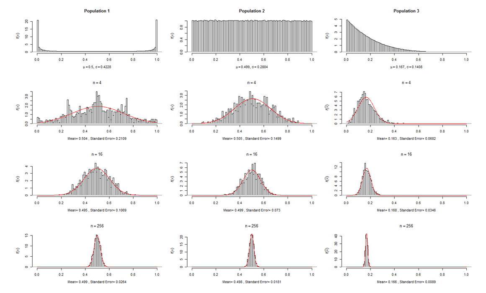
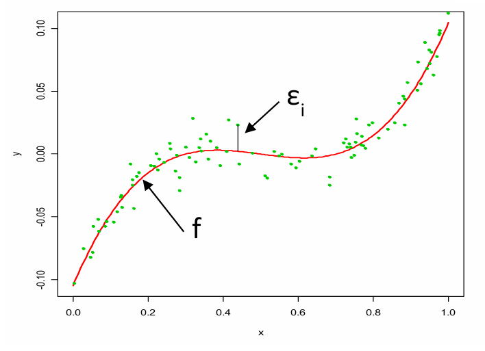
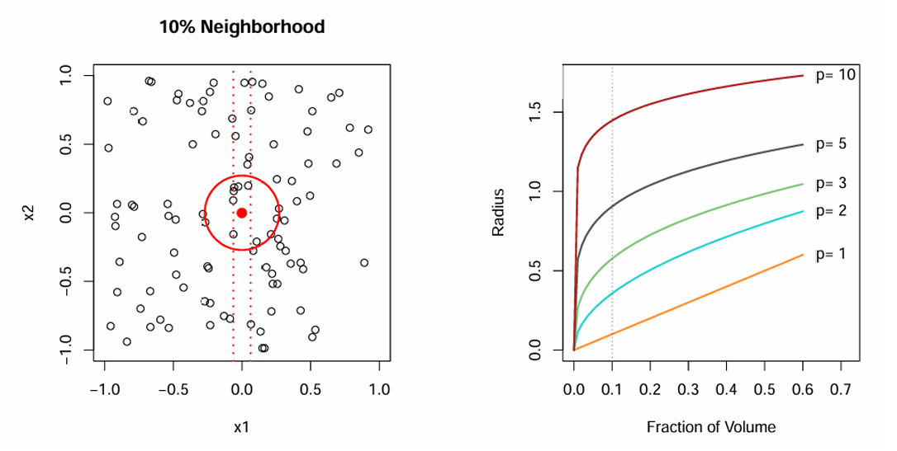
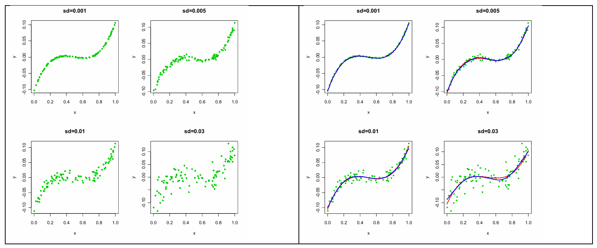
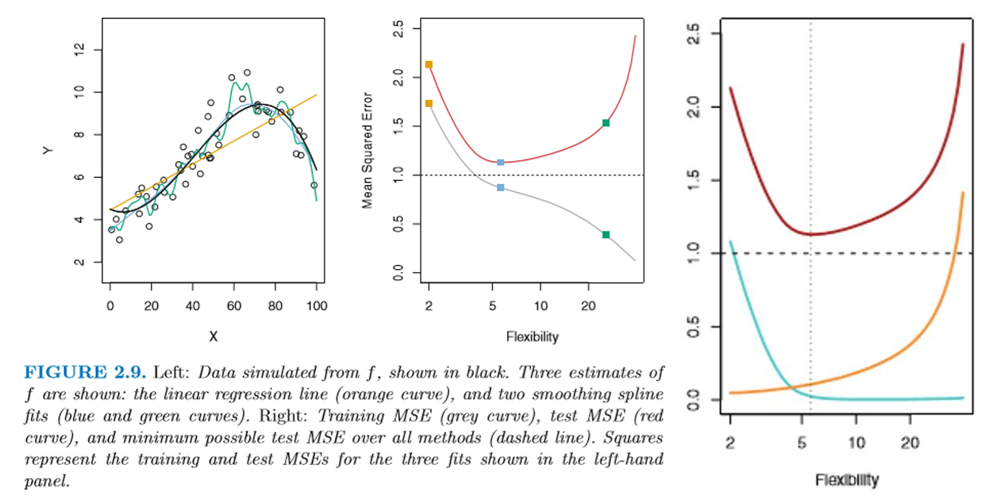
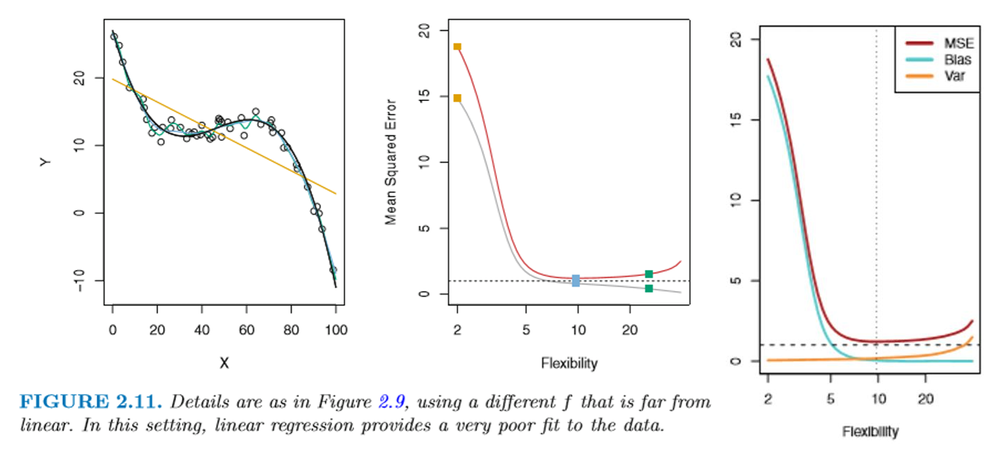
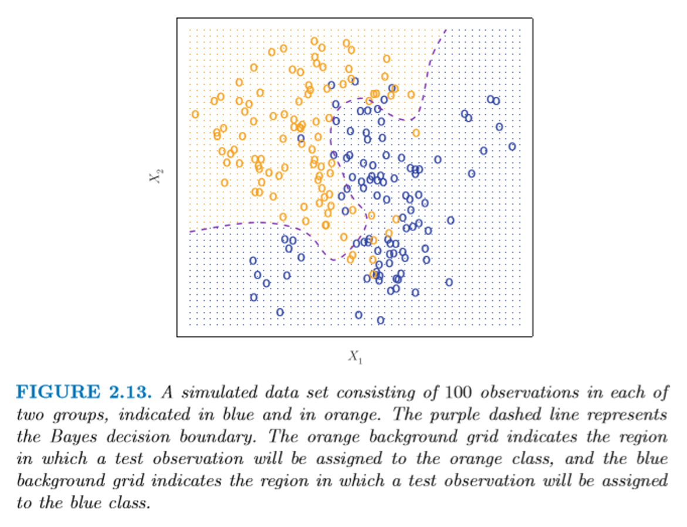
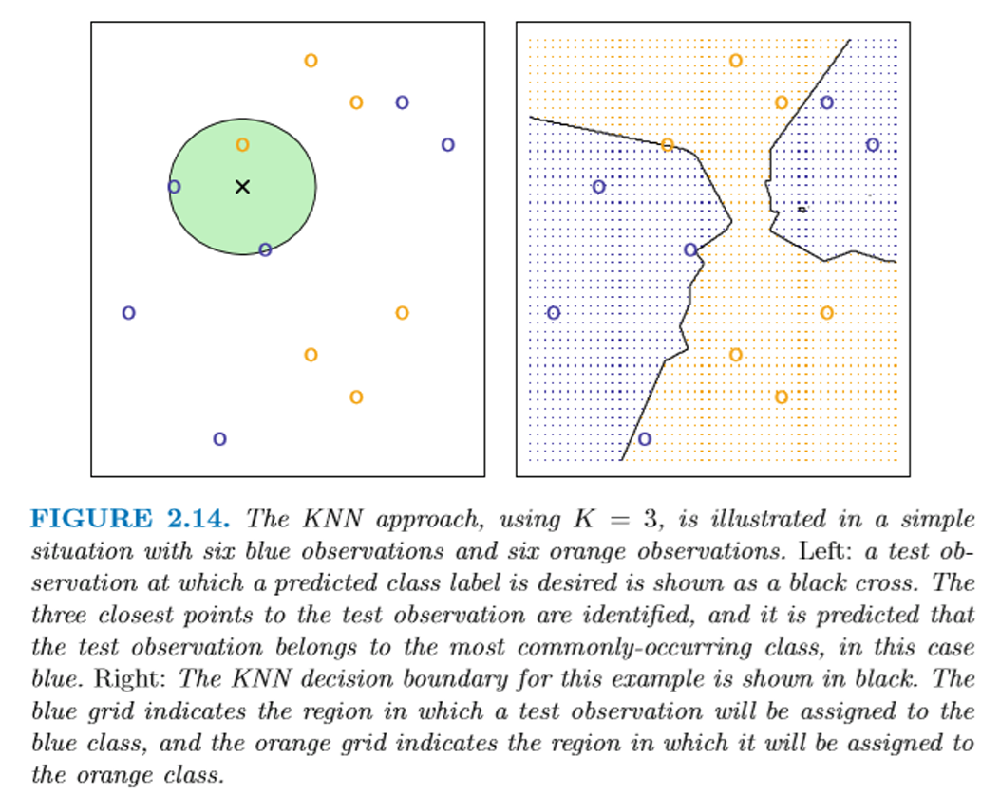
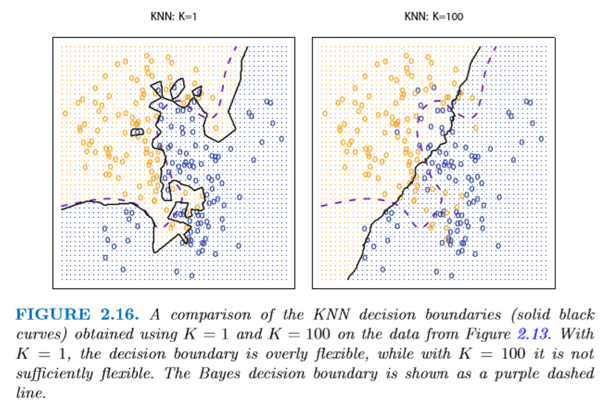
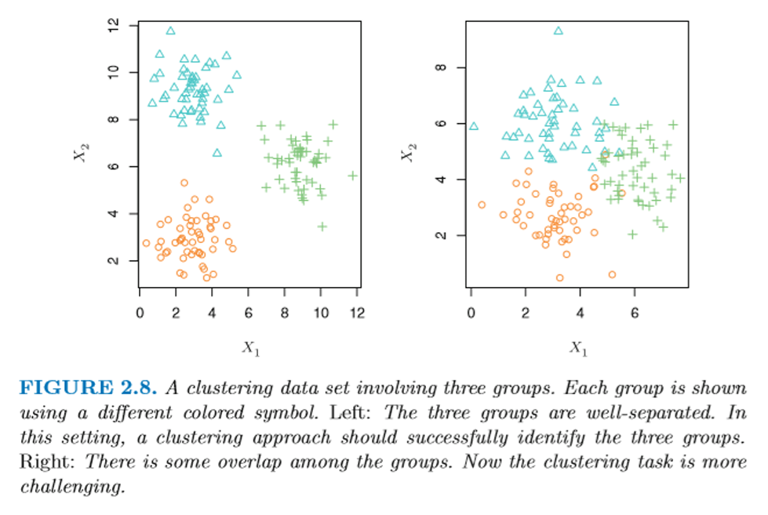

Week02: Key Concepts of Statistical Learning
1 Basic Problem of Machine Learning: Estimated Prediction Function is Sample Based
As with any statistical procedure machine learning algorithms train an estimator or prediction function on sample data.
Our aim is to apply the predictor function to new (or future) dataset, that is, we hope to generalize the estimated predictor function to the whole population from which the training sample has been drawn.
Therefore, the sample must be representative of the underlying population, that is, the target variable \(Y\) as well as the relevant set of \(p\) predictive features \(\{X_1, X_2, \ldots, X_p\}\), which model the variation of the target variable \(Y\).
Aside from having a meaningful signal in the data, the target variable \(Y\) is also influenced by an observation specific unique random error. The predictive features cannot capture this random error.
Problem: Overfitting the model will start capturing the unique random error, which cannot be generalized to new data.
- Any lack of representativeness will lead to biased estimated predictor function. The article
BigDataAndStatistics.pdfgives several examples of this problem even if we are dealing with “big data”. Ultimately, we would like to learn what process mechanism has generated the observed data.
2 Central Limit Theorem and Sampling Uncertainty
- Another uncertainty emerges: by chance even random samples may be outliers with respect to the underlying population.
Therefore, the estimated predictor function will have a standard error measuring its inherent uncertainty.
The central limit theorem allows us to demonstrate this problem.
Def. Central Limit Theorem: Let \(X_1, X_2, \ldots, X_n\) be a random independent sample of size \(n\) drawn from an arbitrarily distributed population with expectation \(\mu\) and standard deviation \(\sigma\). Then for large enough sample sizes \(n\), the sampling distribution of the mean \(\bar{X}\) is asymptotically (i.e., as \(n \to \infty\)) normal distributed with \(\bar{X} \sim \mathcal{N}(\mu, \sigma^2/n)\).
There are two parts to this theorem:
Irrespectively of the sample size the expected value of the mean \(\bar{X}\) is \(E(\bar{X}) = \mu\), i.e., it is equal to that of the underlying population expectation \(\mu\), and its variance is \(Var(\bar{X}) = \sigma^2/n\).
Note, \(n\) in the denominator. Therefore, as the sample size \(n\) increases the standard error (or variance) \(s_{\bar{X}} = \sqrt{\sigma^2/n} = \frac{\sigma}{\sqrt{n}}\) of the mean estimator will shrink. Thus, we are gaining precision, and it is less likely that we work with an extreme sample.

- Asymptotically the sample mean estimator will follow a normal distribution irrespective of the underlying distribution of the population.
Proof of independent sample objects:
\[ Var(\bar{X}) = Var\left(\frac{1}{n} \sum_{i=1}^{n} X_i\right) = \frac{1}{n^2} \sum_{i=1}^{n} Var(X_i) = \frac{1}{n^2} \cdot n \cdot \sigma^2 = \frac{\sigma^2}{n} \]
- Example: Central limit theorem with the R-script CENTRALLIMIT.R:

In summary: different underlying population distributions will lead to a normal distribution of the sample statistic \(\bar{X}\) (and equivalently the sum \(\sum_{i=1}^{n} X_i\)), which is unbiased and the standard error for the mean shrinks with increasing sample size following the rule \(\sigma_{\bar{X}} = \frac{\sigma_{population}}{\sqrt{n}}\).
The central limit theorem becomes important later when we use ensemble learners by pooling and averaging high variance models together.
3 Fundamental Setting of Supervised ML
Some of the figures in this presentation are taken from Chapter 2 of “An Introduction to Statistical Learning, with applications in R (Springer, 2013) with permission from the authors: G. James, D. Witten, T. Hastie and R. Tibshirani”
\(Y_i\): target, dependent, or response variable for the \(i^{th}\) sample observation of a sample of size \(n\).
\(\mathbf{X}_i = (X_{i1}, X_{i2}, \ldots, X_{ip})^T\): vector features, independent or predictor variables for the \(i\) sample observation with \(p\) being number of single features describing object \(i\).

The objective of machine learning is to identify the true underlying population function \(f(\cdot)\) connecting the target variable with the features: \(y_i = f(\mathbf{x}_i) + \varepsilon_i\) where \(\varepsilon_i\) is the irreducible error.
The irreducible error is due to:
- model misspecification (e.g., missing relevant \(X_j\)s) or
- unmeasurable variation in \(\mathbf{Y}\) and \(\mathbf{X}\) or
- inherent random noise allowing in \(Y_i\) for each population member, thus even the true prediction function \(f(\cdot)\) will deviate to some degree from \(Y_i\).
To calibrate the prediction function we aim at minimizing the reducible error with a properly estimated function \(\hat{f}(\mathbf{x})\), which is estimated using sample data:
\[ E(y - \hat{y})^2 = E[f(\mathbf{x}) + \varepsilon - \hat{f}(\mathbf{x})]^2 \] \[ = \underbrace{E[f(\mathbf{x}) - \hat{f}(\mathbf{x})]^2}_{reducible} + \underbrace{Var(\varepsilon)}_{irreducible} \]
Machine learning focuses on estimating the predictor function based on a training sample. The estimated function may not be optimally calibrated for the sample data.
Future observations of the target variable (the underlying population) are predicted using predictor function.
Machine learning usually approaches the function \(\hat{f}(\mathbf{x})\) from a black box perspective, i.e., not being directly interested in its internal structure and estimated parameters.
4 Parametric vs Non-Parametric Methods
- In contrast, inferential statistics (confirmatory statistics) focus on
- Which explanatory variables are associated with the response?
- What is the relationship between the explanatory variables and the response?
- Which functional form adequately summarizes this relationship. \(\Rightarrow\) Perhaps beyond a simple linear relationship.
- Parametric methods:
Assumptions about the functional form \(f(\cdot)\), e.g., linear model \(f(\mathbf{x}_i) = \beta_0 + \beta_1 \cdot x_{i1} + \beta_2 \cdot x_{i2} + \cdots + \beta_p \cdot x_{ip}\).
Estimate the parameters \(\{\beta_0, \beta_1, \ldots, \beta_p\}\) of the functional form with training dataset
Assume a distribution of the unmeasurable variation \(\varepsilon_i\).
This allows us to calculate confidence intervals for the predictions \(\hat{y}\) and the estimate parameters assuming the model is specified correctly.
Models are supposed to be parsimonious.
- Non-parametric methods:
- Aim is to trace the conditional expectation \(f(x_i) = E(y_i|X = x_i)\).
- No explicit assumption about the functional form is taken.
- Error distribution is ignored.
- Lack of an exact functional form \(f(x_i)\) provides a more flexibility fitting to the sample data.
- A higher number of parameters defining \(f(x_i)\) is needed.
- There is a strong risk of overfitting the model by capturing the observation specific irreducible error.
- There is a trade-off between prediction accuracy and model simplicity. Abstraction (model simplicity) fosters interpretability and generalizability.
5 Curse of Dimensionality
- Frequently, information from neighboring data points need to be borrowed:
\[ \hat{f}(x_i) = Ave(y_j | X = x_j; x_j \in \mathcal{N}(x_i)) \]
where \(x_j \in \mathcal{N}(x_i)\) signifies the data values in the neighborhood of the data point \(i\).
This can lead to smoothing of the estimated function \(\hat{f}(x_i)\).
- As the number of variables, i.e., the dimensions \(p\), increases the distribution of data points becomes more and more sparse in the \((p + 1)\)-dimensional space.
Thus there are less data points in the neighborhood \(\mathcal{N}(x_i)\).
- This forces an increase of the neighborhood to have sufficient data values in its range of the prediction location \(x_i\) to estimate \(\hat{f}(x_i)\).

However, the further we move away from \(x_i\) the more varied the functional form \(\hat{f}(x_j)\) will become. Thus, averaging will accumulate more deviation from the true value \(f(x_i)\) at \(x_i\).
Methods to reduce the dimensionality in the \(p\) features to obtain more precise estimates (parsimonious) are called in machine learning regularization.
6 Impact of the Irreducible Error Variance
In supervised learning both the outcome \(y_i\) and the features \(\mathbf{x}_i\) of object \(i\) are observable.
The outcome and the features are connected by a true function \(f(\cdot)\) plus an unknown random error \(\varepsilon_i\):
\[ y_i = f(\mathbf{x}_i) + \varepsilon_i \]
- The uncertainty of estimating \(\hat{f}(\cdot)\) for true but unknown \(f(\cdot)\) increases as the irreducible error increases.
The left panel shows the distribution of data points from a data generating process (DGP) based on a cubic linear model
\[ y = \beta_0 + \beta_1 \cdot x + \beta_2 \cdot x^2 + \beta_3 \cdot x^3 + \varepsilon \]
with increasing variation of the irreducible error distribution \(\varepsilon \sim \mathcal{N}(0, \sigma^2)\).
The right panel compares the true function \(f(\cdot)\) (blue line) against the estimated function \(\hat{f}(\cdot)\) (red line).

7 Supervised Learning
In supervised learning a training sample with \((y_i, \mathbf{x}_i)\) is used to obtain an “accurate” estimate \(\hat{y} = \hat{f}(\cdot)\) of \(f(\cdot)\).
At test sample \((y_0, \mathbf{x}_0)\) is usually withheld to evaluate the predictive accuracy of the estimator \(\hat{f}(\cdot)\).
Since many different estimators \(\hat{f}(\cdot)\) of varying degrees of flexibility can be specified there is usually a trade-off between prediction accuracy and model generality (see R-script RegPolyThinJunk.r).
Overfitting leads to estimators \(\hat{f}(\cdot)\) being well adapted to a particular (given) sample and most likely modeling its specific random error \(\varepsilon\), but they do not generalize to another sample which will have a different random error \(\varepsilon\).
\(\Rightarrow\) There is no free lunch in statistics: not one estimation model dominates all others over all possible data sets.
8 Evaluating the Model Fit
- In a regression setting the Mean-Square-Error of the training or testing data set can be used
\[ MSE_{Train} = \frac{1}{n} \cdot \sum_{i=1}^{n} (y_i - \hat{f}(\mathbf{x}_i))^2 \text{ or } MSE_{Test} = \frac{1}{m} \cdot \sum_{j=1}^{m} (y_{0,j} - \hat{f}(\mathbf{x}_{0,j}))^2 \]
where the subscript 0 in \(y_{0,j}, \mathbf{x}_{0,j}\) denotes the test data \(j \in \{1, 2, \ldots, m\}\)
Other goodness of fit measures, such as the “confusion” matrix and ROC (receiver operating characteristics) are also used for classification problems.
Decomposition of expected squared prediction error for the testing dataset becomes
\[ E(y_0 - \hat{f}(x_0))^2 = Var(\hat{f}(x_0)) + [Bias(\hat{f}(x_0))]^2 + Var(\varepsilon) \]
| Term | Description |
|---|---|
| \(E(y_0 - \hat{f}(x_0))^2\) | Expected \(MSE\) over all possible test samples \((y_0, x_0)\) with \(E(y_0 - \hat{f}(x_0))^2 = E(f(x_0) + \varepsilon - \hat{f}(x_0))^2\) mean square error |
| \(Var(\hat{f}(x_0))\) | Variation of the estimated function \(\hat{f}(\cdot)\) based on the use of different training samples to calibrate the function. \(Var(\hat{f}(x_0)) = E[\hat{f}(x_0) - E(\hat{f}(x_0))]^2\) Simpler models are more stable with less variability in \(\hat{f}(\cdot)\). Simpler models do not run the risk of modeling the sample specific random variability \(\varepsilon\) but may not capture the true function \(f(\cdot)\) well. |
| \([Bias(\hat{f}(x_0))]^2\) | This variation error is introduced by mis-specifying the true functional form \(f(\cdot)\) of the data generating process (DGP). The bias is the difference \(f(x_0) - \hat{f}(x_0)\). \(Bias^2(\hat{f}(x_0)) = [\hat{f}(x_0) - f(x_0)]^2\) Under-fitting using a simple model relative to more complex DGP is a certain cause for a large bias. A properly selected model \(\hat{f}(\cdot)\) will have no bias. |
| \(Var(\varepsilon)\) | Irreducible error variation. Overfitted models try to capture this sample specific random variation. This is the smallest value that the expected MSE can achieve for a perfectly fitting estimated function \(\hat{f}(\cdot)\). |
General rule: As the model becomes more flexible (\(\uparrow\)) the bias will decrease (\(\downarrow\)) but the variance will increase (\(\uparrow\)).
A detailled derivation of the decomposition of the MSE into the predictor variance and the predictor bias can be found at: Bias–variance tradeoff - Wikipedia.
9 Bias-Variance Tradeoff Examples
- Example: Medium number of parameters in DGP and high error variance:

Black line is the true underlying data generating process (DGP) with a random error.
The horizontal dashed line is the MSE solely associated with the variance of irreducible random error \(Var(\varepsilon)\), that is, only overfitted models have a MSE below the variation of the irreducible error.
Trade-off between Variance and Bias for the independent prediction dataset \(y_0\) and \(\mathbf{x}_0\).
Example: Low number of paramters in DGP and high error variance of DGP:

- Example: High number of parameters in DGP and low error variance

10 Classification: Bayesian k-Nearest Neighbor Class Assignment
- In the classification setting the outcome variable is discrete, that is,
\[ y_i = k \text{ if object } i \text{ belongs to the } k^{th} \text{ class} \]
- The error rate, which we aim to minimize, becomes \(\frac{1}{n} \sum_{i=1}^{n} I(y_i \neq \hat{y}_i)\), where the indicator function
\[ I(\cdot) = \begin{cases} 1 & \text{if } y_i \neq \hat{y}_i \\ 0 & \text{if } y_i = \hat{y}_i \end{cases} \]
- A Bayesian classifier assigns an observation \(i\) to the class \(k\) if its conditional probability \(Pr(Y = k | X = \mathbf{x}_0)\) is larger than that for any other class.
For just two classes \(K = 2\) the probability must be \(Pr(Y = k | X = \mathbf{x}_0) > 0.5\).
The Bayesian class membership probabilities in k-nearest neighborhood (kNN) is calculated as:
Determine those \(k\) training points which are the closest to the prediction point \(\mathbf{x}_0\).
Closeness is measured in terms of the Euclidian distance between two objects \(i\) and \(j\) with their feature vectors \(\mathbf{x}_i = (x_{i1}, x_{i2}, \ldots, x_{iP})^T\) and \(\mathbf{x}_j = (x_{j1}, x_{j2}, \ldots, x_{jP})^T\) by
\[ d_{ij} = \sqrt{\sum_{p=1}^{P} (x_{ip} - x_{jp})^2} \]

- Important: Distances change with the scale (i.e., range) of the underlying variables. This is a problem encountered in all distance-based machine learning methods.

Subsequently estimate the Bayesian group probabilities by
\[ Pr(Y = k | X = \mathbf{x}_0) = \frac{1}{|\mathcal{N}_0|} \sum_{i \in \mathcal{N}_0} I(y_i = k) \]
where \(\mathcal{N}_0\) is the neighborhood around the prediction point \(\mathbf{x}_0\) with \(|\mathcal{N}_0|\) the number of training points \(K\) around the prediction location.
Assign the observation to class \(k\) with the highest probability.
The user decides the hyper-parameter \(|\mathcal{N}_0|\) to the desired number of nearest neighbors
This hyper-parameter \(|\mathcal{N}_0|\) determines flexibility of kNN algorithm:

- The hyperparameter \(|\mathcal{N}_0|\) also influences the test and training error rates:

The function
e1071::gknn()performs kNN model calibrations.k-nearest neighbors can also be used to handle metric dependent variables \(y\). In that case, the predicted value \(y_0\) is the average value of the observed values \(y_i\) in its neighborhood \(\mathcal{N}_0\).
11 Advantages and Disadvantages of kNN
In case of an overall class tie, the predicted class is chosen at random.
Advantages of the kNN model:
- Simple and effective estimation, which gives by default the probability of the predicted group membership.
- Makes no assumptions about the underlying distribution of the features.
- Virtually no training time required.
Disadvantages of the kNN model:
- As the number of features increases, the decision space becomes more sparsely populated (curse of dimensionality) which increases the overall uncertainty.
- How are ties (two classes have equal maximum probabilities) broken?
- Features that are irrelevant for the classification task are not eliminated (Machine Learning concept of regularization) thus there is the potential of overfitting the data.
- The performance of the algorithm depends on how comparable the features are scaled to evaluate their distances.
- For each test data point \(\mathbf{x}_0\) the distances need to be calculated to identify the k nearest neighborhood \(\mathcal{N}_0\).
- Euclidian distances for nominal scaled features and missing feature information require additional processing.
- The algorithm’s prediction performance depends on the the hyper-parameter \(k\).
12 Fundamental Setting of Unsupervised ML
In unsupervised learning, only the object features \(\mathbf{x}_i\) but not the outcome \(y_i\) are known to the investigator.
A function \(f(\cdot)\) is sought that allows us to guess what \(y\) could be based on the inherent structure within the observed feature matrix \(\mathbf{X}\).
An example of unsupervised learning is to group feature adjacent objects together into clusters. With respect to their features \(\mathbf{x}_i\) the clusters are supposed to be internally as homogenous as possible, but the identified clusters should be as heterogeneous (distinct) from each other.
Fuzziness in the cluster delimitations determines the success of the classification rule.
Example: Identifying a multivariate mixture distribution
The distribution of points with multiple centers and ellipsoidal standard distances can be modeled by a mixture of multi-normal distributions.
For example in the 2-dimensional setting the mixture distribution the joint density becomes:

\[ f\begin{bmatrix} x_i \\ y_i \end{bmatrix} \sim \sum_{q=1}^{Q} \pi_q \cdot \mathcal{N}\left(\begin{bmatrix} \mu_{x,q} \\ \mu_{y,q} \end{bmatrix}, \begin{bmatrix} \sigma_{x,q}^2 & \sigma_{xy,q} \\ \sigma_{xy,q} & \sigma_{y,q}^2 \end{bmatrix}\right) \]
with \(\pi_q > 0\) and \(\sum_{q=1}^{Q} \pi_q = 1\)
- Unknowns are:
- [a] the number of clusters \(Q\),
- [b] the proportion of points per cluster \(\pi_q\),
- [c] the \(Q\) cluster centers \(\begin{bmatrix} \mu_{x,q} \\ \mu_{y,q} \end{bmatrix}\) and
- [d] their \(Q\) ellipsoidal covariance matrices \(\begin{bmatrix} \sigma_{x,q}^2 & \sigma_{xy,q} \\ \sigma_{xy,q} & \sigma_{y,q}^2 \end{bmatrix}\).
- The probability \(Pr(q | \begin{bmatrix} x_i \\ y_i \end{bmatrix})\) of observation \(\begin{bmatrix} x_i \\ y_i \end{bmatrix}\) belonging to cluster \(q\) is evaluated using the Bayesian theorem
\[ Pr\left(q \middle| \begin{bmatrix} x_i \\ y_i \end{bmatrix}\right) \sim \frac{f\left(\begin{bmatrix} x_i \\ y_i \end{bmatrix} \middle| q\right) \cdot Pr(q)}{\sum_{q=1}^{Q} f\left(\begin{bmatrix} x_i \\ y_i \end{bmatrix} \middle| q\right) \cdot Pr(q)} \]
with the likelihood of \(\begin{bmatrix} x_i \\ y_i \end{bmatrix}\) being in the \(q^{th}\) class
\[ f\left(\begin{bmatrix} x_i \\ y_i \end{bmatrix} \middle| q\right) \sim \mathcal{N}\left(\begin{bmatrix} \mu_{x,q} \\ \mu_{y,q} \end{bmatrix}, \begin{bmatrix} \sigma_{x,q}^2 & \sigma_{xy,q} \\ \sigma_{xy,q} & \sigma_{y,q}^2 \end{bmatrix}\right) \]
and the prior probability \(Pr(q)\).